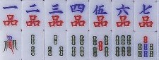
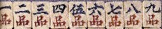

福建牌はココで紹介したとおり、万子が 〜 〜 ではなく、〜となっている。今回紹介するのはもちろんその福建牌であるが、風牌が盡(尽)忠保国（じんちゅうほうこく）、三元牌が岳飛となっている。そこで岳飛牌と通称する。 ではなく、〜となっている。今回紹介するのはもちろんその福建牌であるが、風牌が盡(尽)忠保国（じんちゅうほうこく）、三元牌が岳飛となっている。そこで岳飛牌と通称する。
ちと遠目なので、アップにすると、こんな感じ。
麻雀の源流の一つに、昇官牌という４スート210枚の牌からなりたっている骨牌ゲームがあった。その技法はつまびらかではないが、基本的には出世ゲームみたいなもの。その昇官牌に「品」のスートがある。これは宮廷における「九品（きゅうほん）」の位階を表している。その流れを汲んでいる福建牌は、麻雀の古い形を残している牌である。
福建牌には４つの特徴がある。
（１）万子が品子。
（２）字牌が東南西北發中ではなく、別な字が彫られている。
（３）花牌の文字が、字牌の意味に連動している。
（４）１索が上向きツバメ。
No.19で紹介した福建牌は近年製の樹脂牌なので、４つの特徴のうち、（２）と（３）がそうなっていない。
それでも１索が上向きツバメでという点は踏まえている。

東南西北の風牌に相当する尽忠保国は「忠義を尽くして国を保つ）」の意。中發に相当する岳飛(がくひ）は中国の英雄の名前。日本でも知られている英雄であるが、日本では諸葛孔明とか関羽の方が人気がある。そして孔明と関羽では、どちらが言えば孔明に人気がある。しかし中国では孔明より関羽、関羽より岳飛に人気があるという。
岳飛(1103〜1141)は南宋の武将で、時代的には水滸伝の時代の少し後くらいの人。岳飛が産まれる時、一羽の白鳥が鳴きながら室の上を飛んだ。それで『飛』と命名したと言う。そこで字(あざな＝成人してから自分でつける名前)を鵬挙(ほうきょ)とした。
身体にも「尽忠報恩」という四字を刺青していたという。当時、南宋は北方の金に圧迫されていたが、岳飛は先頭に立って闘かい、大きな功をあげた。しかし非戦論者の宰相・秦檜(しんかい)に讒言(ざんげん)され、獄死した。そこで三元牌が岳飛白(岳飛潔白)、風牌が尽忠保国というわけである。
（３）花牌の文字が、字牌の意味に連動している。
とうぜんそして花牌は、尽忠保国に連動した「別金血戦・萬古泰流」
別金血戦は「金国と血戦」の意と分かるが、残念ながら萬古泰流の方はよく分からない。もちろん（４）の上向きツバメは約束通り。
福建牌の１索が上向きツバメなのは、これも福建牌が、麻雀の古い形を残している牌だからである。それは麻雀博物館が所蔵する、もっとも初期と思われる福建牌・公侯将相(こうこうしょうそう)牌を見ればよくわかる。
この公侯将相(官位を表す)牌の１索は、青[虫夫](チンフー＝金銭の象徴)であるが、上向きツバメにそっくり。そこでこの青[虫夫]が、上向きツバメに変化したことは容易に推測される。
なお公侯将相牌の花牌は、公侯将相に連動した連中三元(れんちゅうさんげん)、指日高升(しびこうしょう)。
※「連中三元」は科挙の３段階の試験(郷試・会試・殿試)にすべて首席(解元・会元・状元＝三元)で合格すること。「指日高升」は日ならず昇進すること。
福建牌で有名なのが、麻雀博物館所蔵の善後会議牌。これは風牌が善後会議で、三元牌が北京(中發に相当)。福建牌の特徴の一つ、索子の特徴もしっかりしている。もちろん字牌と花牌の意味（北京）も連動している。
善後会議とは1925年（大正14）、孫文（そんぶん）の国民会議派に対抗するため、北洋軍閥系の段祺瑞（だんきずい）が主導して北京の善後という場所で行われた歴史的に有名な会議。
ただ惜しいことに花牌２連４座のうち、１枚が欠けているが、福建牌として非常に貴重な牌であることに変わりはない。
また麻雀博物館が所蔵している遊龍戯鳳牌。

これは京劇の名優、梅蘭芳(メイランファン)が特注で作らせた牌。風牌に相当する遊龍戯鳳（ゆうろんぎほう）は、有名な京劇の演目である。そこで三元牌も「演劇白」となっている。
京劇は、日本で言えば歌舞伎みたいなものであるが、歌舞伎より立ち回りが派手。そしてミュージカルやオペラのように音楽性が強い。そこでチャイニーズ オペラとも称される。
遊龍戯鳳あらすじ。
明の正徳帝(位1505-21)は、微行(びこう＝身分を隠して市井を回ること)を好んだ。あるときも軍人の身なりで出かけ、李龍哥(りりゅうか)の家に泊まった。すると龍可の妹、鳳姐(ほうそ)がすこぶるつきの美人。皇帝はすっかり虜になったが、鳳姐は邪険な態度を取った。しかし怒った顔がまたいいというので、つれかえって妃(きさき)にした、というストーリー。すなわち遊龍戯鳳は、「李龍哥の家で遊んで鳳姐と戯(たわ)むれる」という意。
もちろん１連２座の花牌の文字も、字牌と意味が連動している。各伶表演は、名役者の演技を表し、古今趣史は、明(ミン)の博物史書である「古今逸史」を踏まえている。（麻雀大図録参照） 特注で作らせただけあって、箱も象嵌の段箱と非常に立派。
「立派に作れ」と指示されたためか、索子が立派な竹管索子(ちくかんソーヅ)。１索もシンプルな上向きツバメではない。
竹管索子は堂々としていて、σ(-_-)も好きなデザイン。ただし本来は華北のデザイン。とはいうものの、この遊龍戯鳳、そんなことは気にならないくらいのすばらしいセットである。
|